14. Projects
A Project is a logical collection of Ansible playbooks.
You can manage playbooks and playbook directories by either placing them manually under the Project Base Path, or by placing your playbooks into a source code management (SCM) system supported by automation controller, including Git and Subversion, or a remote archive.
Note
The Project Base Path is /var/lib/awx/projects in the controller pods. Manual projects are directories under that path, inside the controller’s projects volume.
Open Automation Execution > Projects. The list shows the projects you can see; it can be searched and sorted, and its columns can be chosen with the column management button.
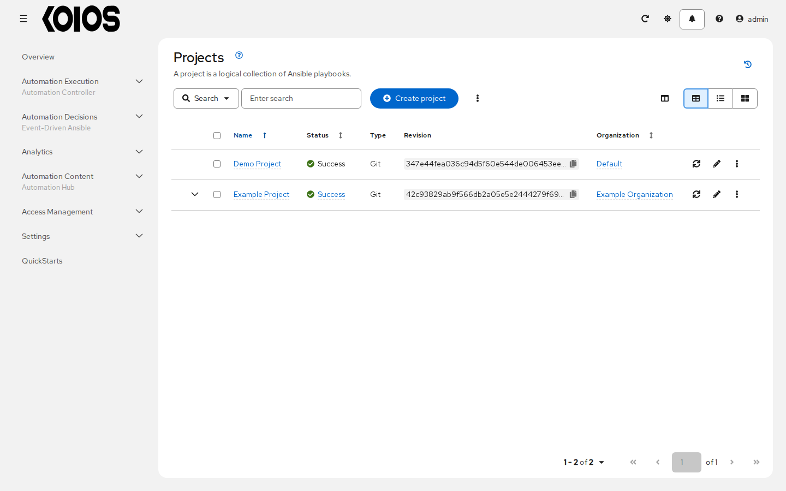
Expand a row with the arrow next to it to see its description and when it was last used.
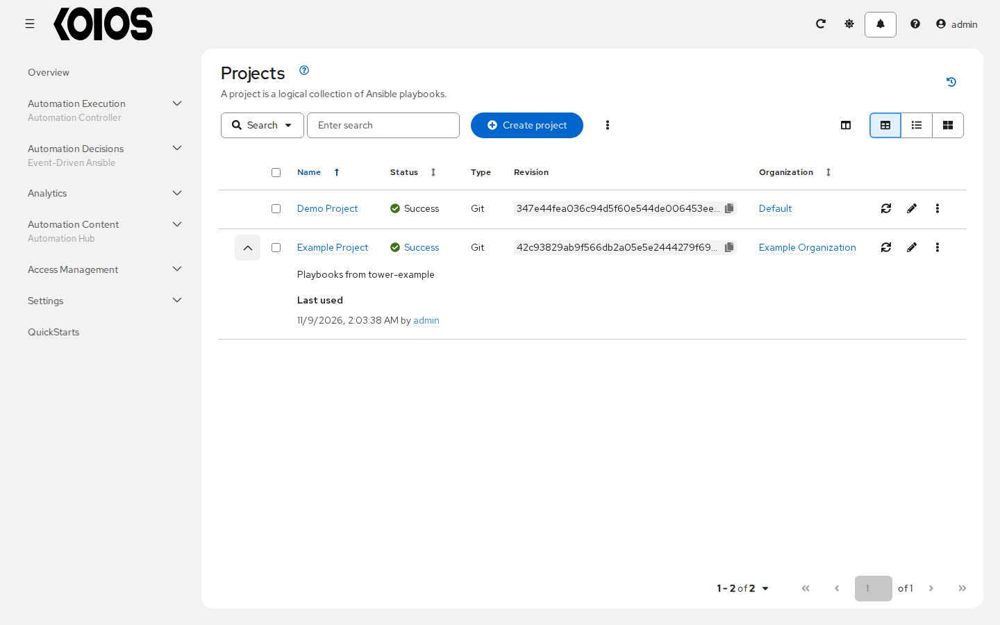
Each row has Sync project (to get the latest revision from source control), Edit project and, in its menu, Duplicate project, Cancel project sync and Delete project. Projects are allowed to be updated while a related job is running. In cases where you have a big project (around 10 GB), disk space on /tmp may be an issue.
Status indicates the state of the project and may be one of the following (you can also filter the list by status):
Pending - The source control update has been created, but not queued or started yet. Any job (not just source control updates) will stay in pending until it’s actually ready to be run by the system. Reasons for it not being ready because it has dependencies that are currently running so it has to wait until they are done, or there is not enough capacity to run in the locations it is configured to.
Waiting - The source control update is in the queue waiting to be executed.
Running - The source control update is currently in progress.
Success - The last source control update for this project succeeded.
Failed - The last source control update for this project failed.
Error - The last source control update job failed to run at all.
Canceled - The last source control update for the project was canceled.
Never updated - The project is configured for source control, but has never been updated.
OK - The project is not configured for source control, and is correctly in place.
Missing - The directory of a manual project is absent from the project base path
/var/lib/awx/projects. The status of a source control project always comes from its last update.
Note
Manual projects cannot be updated or scheduled from source control; change their Source control type first.
Note
When you delete items, a confirmation window lists them and asks you to confirm the deletion; it does not list the other items that use them. Templates that used a deleted item keep existing without it: a job template without project cannot be launched until you select another one; without inventory, it needs another one, selected in the template or, if the template prompts for it, at launch; a deleted credential is simply removed from the templates, which run without it. Below is an example of the confirmation window:

14.1. Add a new project
To create a new project:
In the Projects list, click Create project.
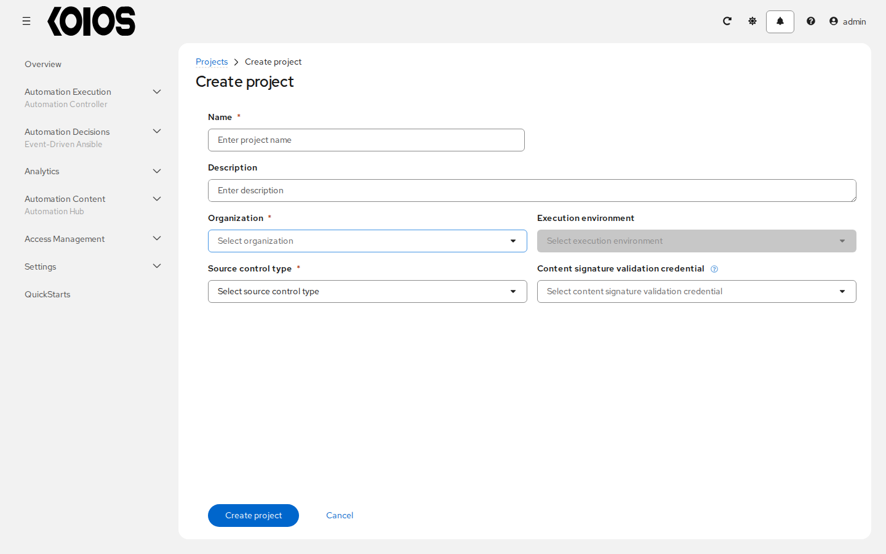
Enter the appropriate details into the following fields:
Name (required)
Description (optional)
Organization (required) - The organization that owns the project.
Execution environment (optional) - The execution environment of the jobs that use this project. It becomes available once an organization is selected. See Execution Environments for more information.
Source control type (required) - Manual, Git, Subversion, Red Hat Insights or Remote Archive. The Type Details section that follows depends on the type you choose. Refer to Manage playbooks manually or Manage playbooks using source control in the subsequent sections for more detail. Red Hat Insights uses an Insights credential.
Content signature validation credential (optional) - Select a GPG Public Key credential to validate the content signature during project sync. A validation failure fails the project update. See Project Signing and Verification for the signing and verification procedure.
For an Insights project, select Red Hat Insights in Source control type and choose the Insights credential. The example below uses Example Insights credential for Insights project.
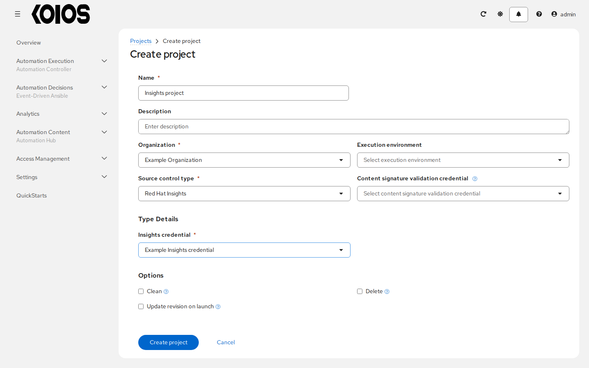
Click Create project when done.
The project opens with its Details, Schedules, Job Templates, User Access and Team Access tabs, and Notifications when your permissions allow it. A source control project starts its first sync right away.
The following describes ways projects are sourced in automation controller:
14.1.1. Manage playbooks manually
Warning
The projects volume of the controller is not persistent by default: files copied into it are lost
when the pods restart. Prefer a source control project. Manual projects need
projects_persistence: true in spec.controller (a ReadWriteMany volume, shared by every
controller replica).
Create one or more directories to store playbooks under the Project Base Path (
/var/lib/awx/projects).Create or copy playbook files into the playbook directory.
Ensure that the playbook directory and files can be read by the
awxuser of the controller containers.
When you select Manual, the Type Details section shows the Project base path and a Playbook directory list with the directories not yet assigned to another project; each directory can only be assigned to one project. If there are no free directories, a warning explains that the base path is empty or all its contents are assigned to other projects; create a new directory there, or use a source control type instead.
14.1.2. Manage playbooks using source control
14.1.2.1. SCM Types - Git and Subversion
To configure playbooks to use source control:
Select Git or Subversion in Source control type.
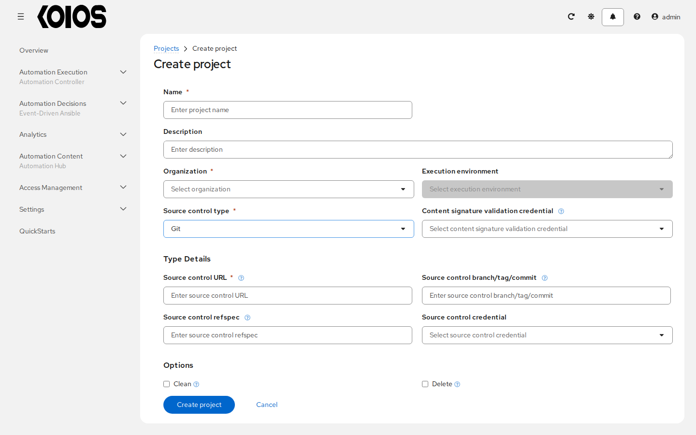
Enter the appropriate details into the following fields of Type Details:
Source control URL (required) - Click the help icon next to the field for examples.
Source control branch/tag/commit (Revision number for Subversion) - Optionally enter the branch, tag, commit hash, arbitrary ref, or revision number to check out. Some commit hashes and refs may not be available unless you also provide a custom refspec in the next field. If left blank, the default is HEAD, the default branch of the repository.
Source control refspec - (Git only) Only advanced users familiar and comfortable with git should specify which references to download from the remote repository. For more detail, see job branch overriding.
Source control credential - If authentication is required, select the appropriate source control credential.
In Options, optionally select the update behavior:
Clean - Removes any local modifications prior to performing an update.
Delete - Deletes the local repository in its entirety prior to performing an update. Depending on the size of the repository this may significantly increase the amount of time required to complete an update.
Track submodules - (Git only) Tracks the latest commit of the submodules. See more details in the help of the option.
Update revision on launch - Updates the revision of the project to the current revision in the remote source control before each job, as well as the roles and collections from Galaxy or Collections. To avoid job overflows if jobs are spawned faster than the project can sync, it shows Cache Timeout: the number of seconds a previous project sync is reused.
Allow branch override - Allows a job template or an inventory source that uses this project to launch with a specified source control branch or revision other than that of the project’s. For more detail, see job branch overriding.

Click Create project to save your project.
Tip
Using a GitHub link offers an easy way to use a playbook. To help get you started, use the
helloworld.ymlfile available at: https://github.com/ansible/tower-example.gitThis link offers a very similar playbook to the one created manually in the instructions found in the Koios Automation Platform Quick Start. Using it will not alter or harm your system in anyway.
14.1.2.2. SCM Type - Remote Archive
Playbooks using a remote archive allow projects to be provided based on a build process that produces a versioned artifact, or release, containing all the requirements for that project in a single archive.
To configure playbooks to use a remote archive:
Select Remote Archive in Source control type.
Enter the appropriate details into the following fields:
Source control URL - requires a URL to a remote archive, such as a GitHub Release or a build artifact stored in Artifactory and unpacks it into the project path for use
Source control credential - If authentication is required, select the appropriate source control credential
In Options, optionally select the update behavior:
Clean - Removes any local modifications prior to performing an update.
Delete - Deletes the local repository in its entirety prior to performing an update. Depending on the size of the repository this may significantly increase the amount of time required to complete an update.
Update revision on launch - Not recommended, as this option updates the revision of the project to the current revision in the remote source control, as well as the roles and collections from Galaxy or Collections.
Allow branch override - Not recommended, as this option allows a job template that uses this project to launch with a specified source control branch or revision other than that of the project’s.
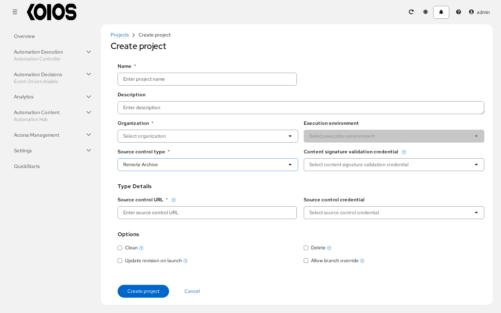
Note
Since this SCM type is intended to support the concept of unchanging artifacts, it is advisable to disable Galaxy integration (for roles, at minimum).
Click Create project to save your project.
14.2. Updating projects from source control
Update an existing source control project with Sync project, in its row of the Projects list or at the top of the project.
Note
Immediately after adding a project set up to use source control, a sync starts that fetches the project content from the configured source control.
Click the status of the project in the Status column to open the output of its last update, with its plays, tasks and the revision it checked out.
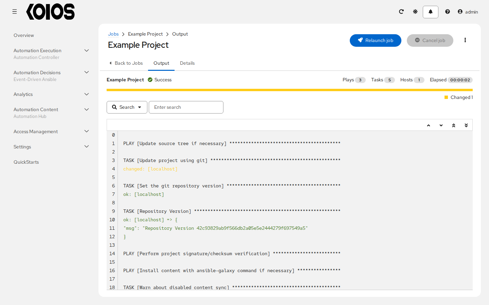
14.3. Work with Permissions
The set of permissions assigned to this project (role-based access controls) that provide the ability to read, modify, and administer projects, inventories, job templates, and other automation controller elements are Privileges.
The User Access and Team Access tabs list the users and teams with roles on the project; Assign users and Assign teams give roles to more of them. Users must exist first; see Users.
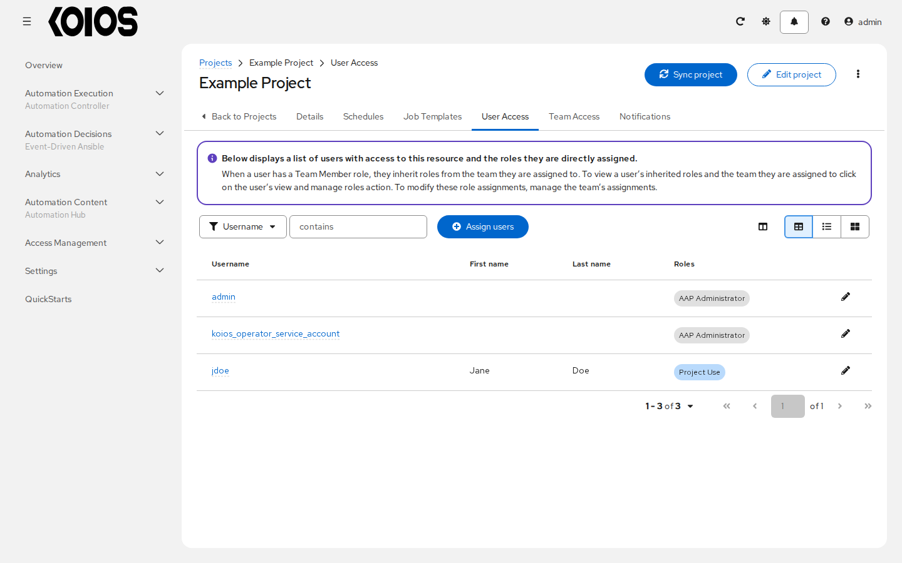
14.4. Work with Notifications
The Notifications tab lists the notifiers you can use with the project.
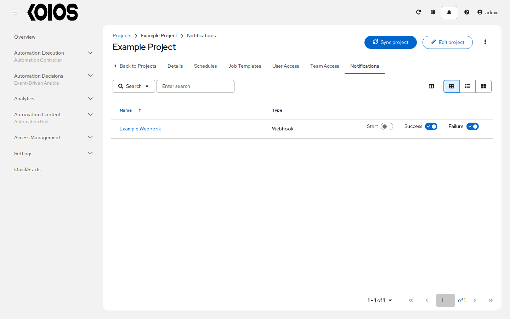
Use the Start, Success and Failure toggles to enable or disable each notifier for the updates of this project. For more detail, see Enable and Disable Notifications.
If no notifiers have been set up, create them in Automation Execution > Administration > Notifiers. Refer to Notification Types for additional details on configuring various notification types.
14.5. Work with Job Templates
The Job Templates tab lists the job templates that use this project. Click a template to open it; the row actions launch or edit it.
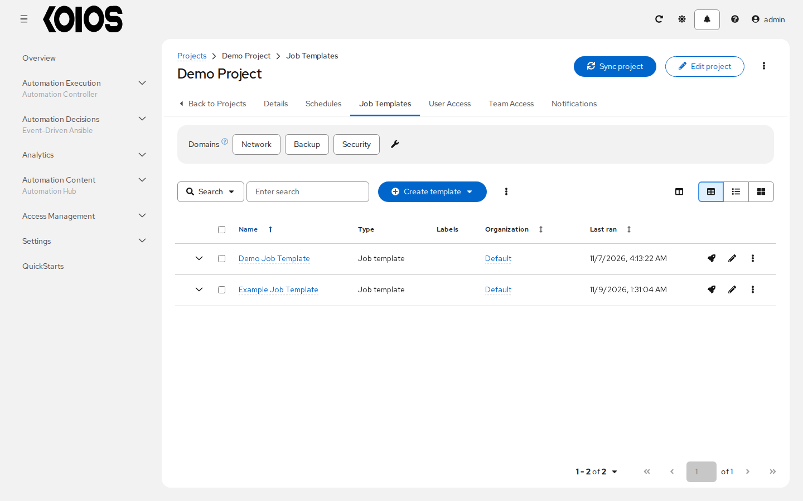
14.6. Work with Schedules
The Schedules tab lists the schedules that update this project from source control. Click Create schedule to add one, use the toggle of a schedule to enable or disable it, and the row actions to edit or delete it. Refer to Schedules for more information.
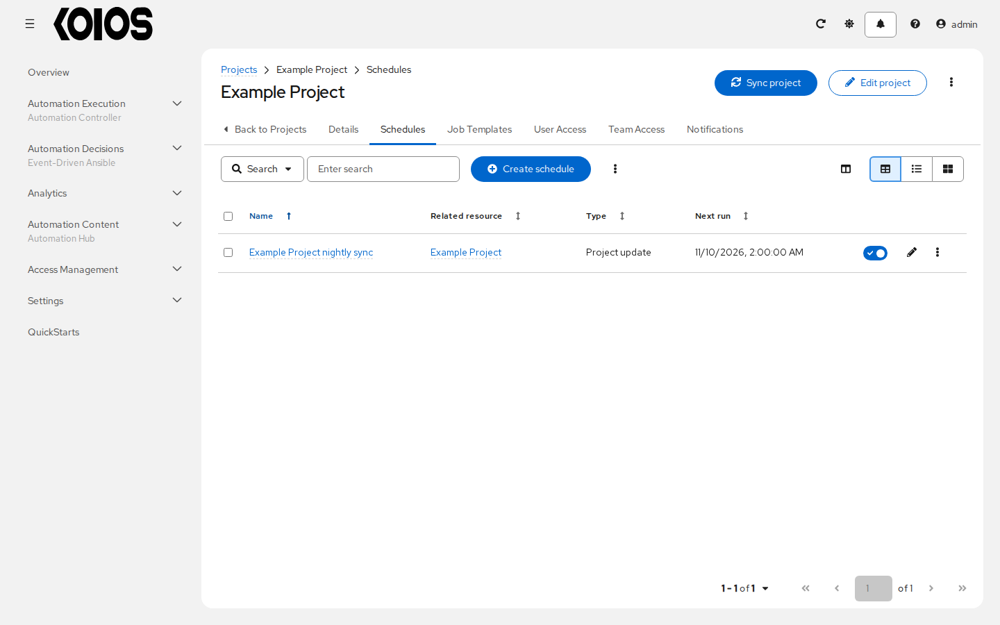
14.7. Ansible Galaxy Support
At the end of a Project update, automation controller searches for a file called requirements.yml in the roles directory, located at <project-top-level-directory>/roles/requirements.yml. If this file is found, role download is enabled and the organization of the project has at least one Galaxy credential (see Using Collections via Hub; also for the public Ansible Galaxy, which needs no token), the following command automatically runs:
ansible-galaxy role install -r roles/requirements.yml -p <project-specific cache location>/requirements_roles -vvv
This file allows you to reference Galaxy roles or roles within other repositories which can be checked out in conjunction with your own project. The addition of this Ansible Galaxy support eliminates the need to create git submodules for achieving this result. Given that SCM projects (along with roles/collections) are pulled into and executed from a private job environment, a <private job directory> specific to the project within /tmp is created by default. You can specify another Job execution path in Settings > Automation Execution > Job:
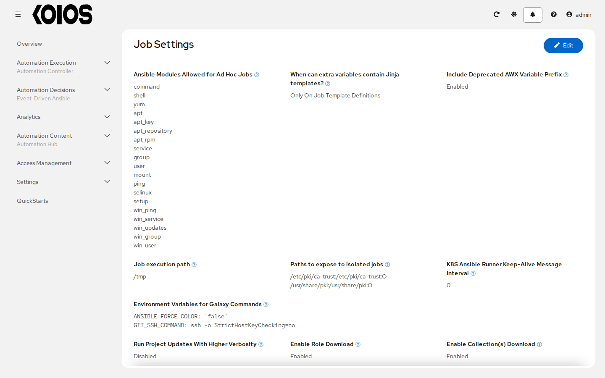
The cache directory is a subdirectory inside the global projects folder. The content may be copied from the cache location to <job private directory>/requirements_roles location.
By default, automation controller has a system-wide setting that allows roles to be dynamically downloaded from the roles/requirements.yml file for SCM projects. You may turn off this setting in Settings > Automation Execution > Job: click Edit and turn off Enable Role Download.
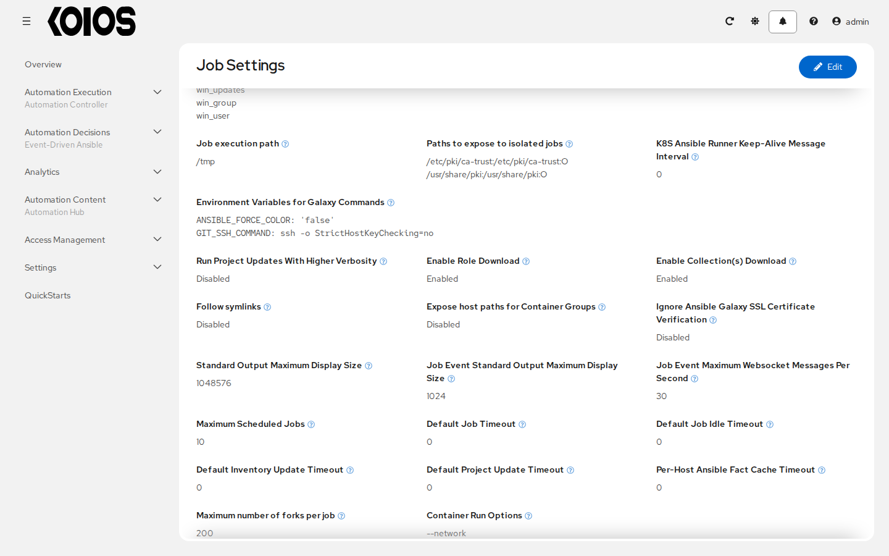
Roles and collections are cached by the content of the requirements files: a project update computes a hash of roles/requirements.yml and collections/requirements.yml and, when a cache for that hash exists, reuses it instead of downloading again. A change in an upstream role or collection is therefore not picked up while the requirements files stay the same, even with Update revision on launch.
For instance, say you have two git repositories in source control. The first one is playbooks and the project in automation controller points to this URL. The second one is provision-role and it is referenced by the roles/requirements.yml file inside of the playbooks git repo. Pin the version (a tag or commit) of provision-role in roles/requirements.yml; to use a new version, change it there and update the project.
To update the project, and with it any change in its requirements files, before every job run, select Update revision on launch in the project options:

For more information and examples on the syntax of the requirements.yml file, refer to the role requirements section in the Ansible documentation.
If there are any directories of the host that jobs need, you can list them in Paths to expose to isolated jobs in the same settings page, or declare the setting in spec.controller.extra_settings of the KoiosPlatform:
AWX_ISOLATION_SHOW_PATHS = ['/list/of/', '/paths']
These paths are mounted in the jobs that run on execution nodes outside the cluster (see Managing Capacity With Instances). Jobs that run in container groups, the default in Koios Automation Platform, only mount them when Expose host paths for Container Groups is enabled, as hostPath volumes of the Kubernetes node that runs the job; the security policies of the cluster must allow them.
Settings declared in the KoiosPlatform are applied by the operator, which rolls out the controller pods; do not edit files inside the pods, as the operator replaces them.
14.8. Collections Support
Automation controller supports project-specific Ansible collections in job runs. If you specify a collections requirements file in the SCM at collections/requirements.yml, automation controller will install collections in that file during the project update, provided that collection download is enabled and the organization of the project has at least one Galaxy credential.
By default, automation controller has a system-wide setting that allows collections to be dynamically downloaded from the collections/requirements.yml file for SCM projects. You may turn off this setting in Settings > Automation Execution > Job: click Edit and turn off Enable Collection(s) Download.
Collections share the cache described in Ansible Galaxy Support: pin their versions in collections/requirements.yml and change them there to get new ones. To update the project before every job run, select Update revision on launch:
14.8.1. Using Collections via Hub
Projects install the collections listed in their collections/requirements.yml from the Galaxy credentials of their organization, in the order they are listed there (see Organizations). Each Galaxy credential is an Ansible Galaxy/Automation Hub API Token credential pointing to one server or repository: Ansible Galaxy, the automation hub of Koios Automation Platform, or another one.
To use the automation hub of the platform, create a token, a credential with the URL of the published repository, and add the credential to the organization, as described in Automation hub. Each repository of automation hub needs its own credential, so you can give each organization access to different repositories.
Note
Suppose you have two repositories:
Prod:
Namespace 1andNamespace 2, each with collectionAandBso:namespace1.collectionA:v2.0.0andnamespace2.collectionB:v2.0.0Stage:
Namespace 1with only collectionAso:namespace1.collectionA:v1.5.0
You can create a credential for each one. Then you can assign different levels of access to different organizations. For example, a Developers organization can have access to both repositories, while an Operations organization only has access to the Prod repository.
If the server uses certificates that the controller does not trust, you can enable Ignore Ansible Galaxy SSL Certificate Verification in Settings > Automation Execution > Job. This is a global setting; prefer adding the certificate authority to the trust of the platform.
Then create a project whose source repository lists the collections in collections/requirements.yml, following the syntax described in the corresponding Ansible documentation, and sync it: automation controller installs the collections, and they are available to every job template that uses the project.
Note
If updates are needed from Galaxy or Collections, a sync is performed that downloads the required roles, consuming that much more space in your /tmp file. In cases where you have a big project (around 10 GB), disk space on /tmp may be an issue.
For more information on collections, refer to Using Collections.